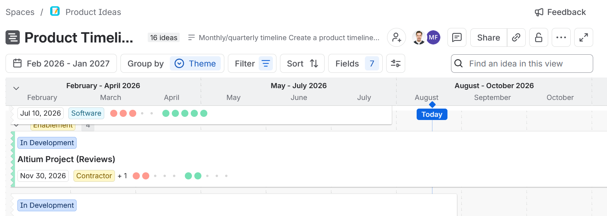

The Problem
Product ideas arrived through support calls, emails, and hallway conversations. There was no intake process, no framework for prioritizing what to build, and no clear owner of those decisions. Quality issues had the same problem. Field bugs and customer complaints came in through different channels with no consistent way to triage them. Engineering worked off whatever was most urgent that week, with no backlog, no story points, and no visibility into what was actually getting built or when.
What I Built
A full product innovation engine, designed from scratch, configured in Jira, and rolled out across engineering, sales, and leadership:
- Centralized intake — a single Product Ideas board consolidating ideas from submission forms, hallway conversations, customer calls, and direct field observation. One place instead of scattered inboxes.
- Objective scoring — every idea gets an impact vs. effort score, an owner, and a status. It made prioritization transparent and easier to align on across teams.
- Lifecycle governance — a written SOP covering every stage from NEW IDEA to RELEASED TO MARKET, with defined approval gates and role responsibilities. The system runs without me.
- Sprint integration — approved ideas flow directly into bi-weekly engineering sprints with story point estimation and KPI tracking. First time the team had a shared cadence.
The System



Results
Triage time dropped from up to 3 months to ~1 week, giving the team a real rhythm for the first time. Engineering throughput improved ~19% over 17 consecutive sprints. The process now runs independently, adopted across engineering, sales, and leadership.
- Prioritization decisions briefed directly to the CEO, full visibility from customer signal to strategic decision
- First structured product process in company history — zero to fully operational
- 130+ ideas and 40+ bugs prioritized across 5 product lines
- SOP documented and in use — onboards new team members without PM involvement
- Improved cross-functional alignment across sales, marketing, and engineering using Microsoft Planner to coordinate go-to-market launches, ensuring every department was ready when features and products shipped